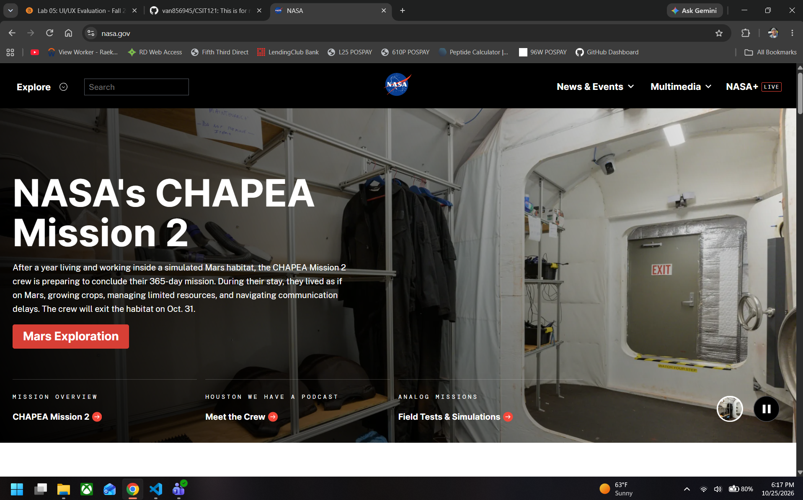

What is the URL of the website?
What is the name of the website?
NASA
Who is the site's target audience?
The website is for people who like learning about space and likes to stay up to date with space articles and news surrounding NASA.
How is the site organized?
NASA uses hierarchical organization. The homepage has different categories that lead to other pages.
Which CRAP Design Principle does the site use?
NASA uses contrast because the text stands out from the background. It also uses repetition because the colors and fonts are similar on each page.
What is the Audit Score according to the Accessibility Checker
The accessibility score is 54.
What is the site's effectiveness? Does it help users complete actions accurately?
The website is effective because people can find information about space and NASA missions, as well as, stay up to date with the latest news on space exploration.
What is the site's efficiency? Can users perform tasks quickly?
The website is easy to navigate. The menu helps users find different topics.
How is the engagement? Is it pleasant to use and appropriate for its industry/topic?
The website is interesting because it has pictures and videos about space.
Recommendations
To be honest I dont see too many issues and given the score was a 54 is crazy. I think NASA could make the menu simpler so it is easier to find things. Another thing I noticed is the font for the artcles should be a little smaller on the homepage.
Website Screenshot
